This document provides practical guidance on building applications with the agent-swarm-kit framework. It covers common architectural patterns, integration strategies, and best practices for creating multi-agent systems.
For detailed information about individual components, see Core Components. For advanced system design concepts, see Building Multi-Agent Systems and Tool Integration.
The framework provides three primary patterns for client interaction, each suited for different use cases and communication requirements.
The simplest pattern for single-request interactions without persistent state:
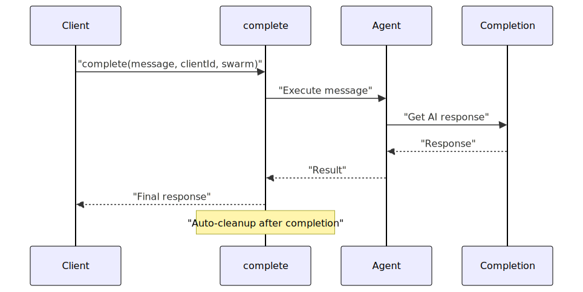
This pattern automatically manages session lifecycle and is ideal for stateless interactions:
| Use Case | Benefits | Limitations |
|---|---|---|
| API endpoints | Simple, no state management | No conversation history |
| Quick queries | Automatic cleanup | Limited tool persistence |
| Batch processing | Minimal resource usage | No real-time updates |
For persistent conversations with managed state and history:
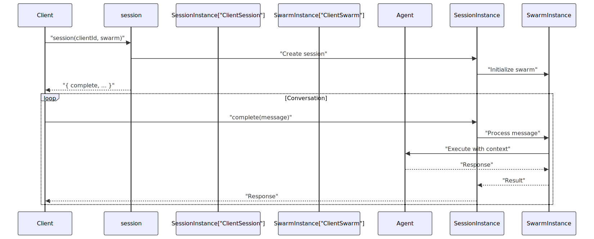
This pattern maintains conversation context and enables complex multi-turn interactions:
| Feature | Implementation | Benefits |
|---|---|---|
| Message History | Persistent conversation log | Context awareness |
| Agent Navigation | Seamless agent switching | Specialized workflows |
| State Management | Client-specific data | Personalization |
| Resource Tracking | Session validation | Memory management |
For WebSocket-like real-time communication with server-side events:
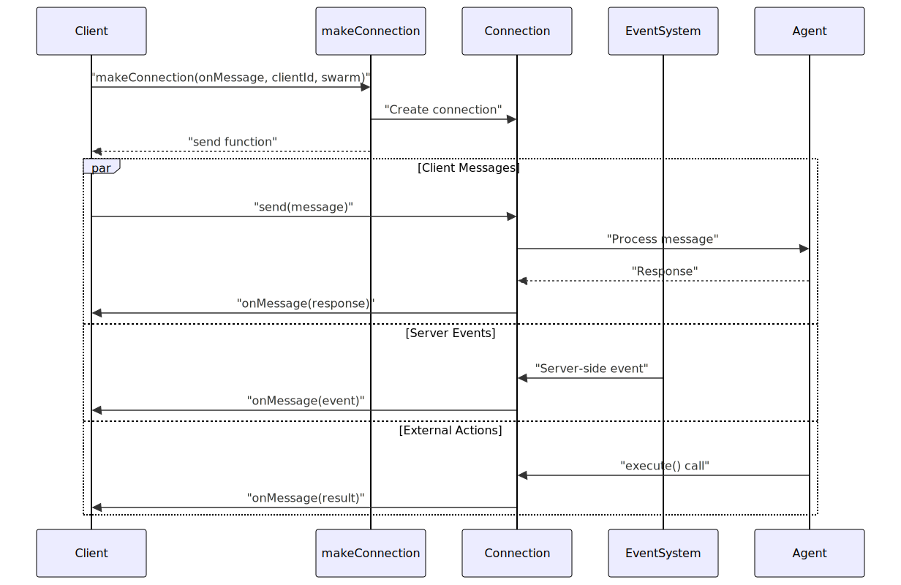
This pattern enables real-time bidirectional communication:
| Capability | Function | Use Case |
|---|---|---|
| Client-to-Server | send(message) |
User input |
| Server-to-Client | onMessage(data) |
AI responses |
| Server Events | event(clientId, type, data) |
Notifications |
| External Execution | execute(message, clientId, agent) |
Background tasks |
Multi-agent systems require sophisticated navigation patterns to route users between specialized agents based on context and requirements.
The most common pattern uses tools to handle agent transitions:
Navigation tools provide structured agent transitions:
// Pattern from test files
const NAVIGATION_TOOL = {
toolName: "navigate-tool",
call: async ({ clientId, params: { to } }) => {
await changeToAgent(to, clientId);
await execute("Navigation complete", clientId, to);
},
function: {
name: "navigate-tool",
description: "Navigate to specialized agent",
parameters: {
type: "object",
properties: {
to: { type: "string", description: "Target agent name" }
}
}
}
}
For programmatic navigation without tool overhead:
Direct navigation functions provide immediate agent switching:
| Function | Purpose | Use Case |
|---|---|---|
changeToAgent() |
Switch to specific agent | Directed workflow |
changeToDefaultAgent() |
Return to starting agent | Reset conversation |
changeToPrevAgent() |
Return to previous agent | Undo navigation |
The framework implements sophisticated concurrency patterns to handle multiple simultaneous operations while maintaining message ordering and client isolation.
Each client session maintains independent execution context:
This pattern ensures that concurrent clients don't interfere with each other:
| Isolation Level | Component | Behavior |
|---|---|---|
| Client-Specific | Message Queue | Sequential processing per client |
| Client-Specific | Agent State | Independent navigation history |
| Client-Specific | Conversation History | Separate message logs |
| Shared | Swarm Configuration | Common agent definitions |
| Shared | Completion Engine | Shared AI provider access |
The framework guarantees message ordering within each client session:
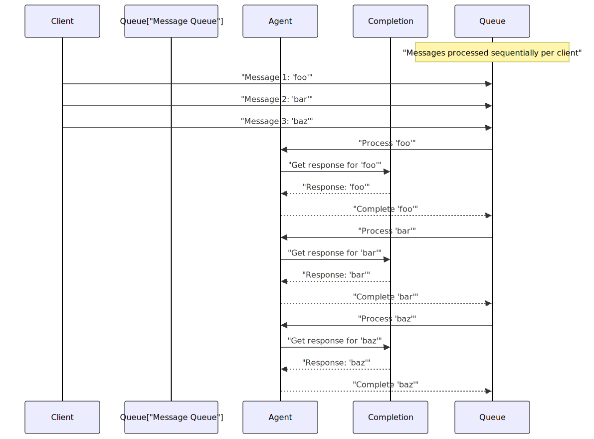
Tools extend agent capabilities by providing access to external functions, APIs, and system resources.
Standard tools that execute external functions:
Tool integration requires proper validation and error handling:
| Phase | Function | Error Handling |
|---|---|---|
| Registration | addTool() |
Schema validation |
| Validation | validate() |
Custom business logic |
| Execution | call() |
Exception handling |
| Output | commitToolOutput() |
Response formatting |
Specialized tools for agent navigation with context preservation:
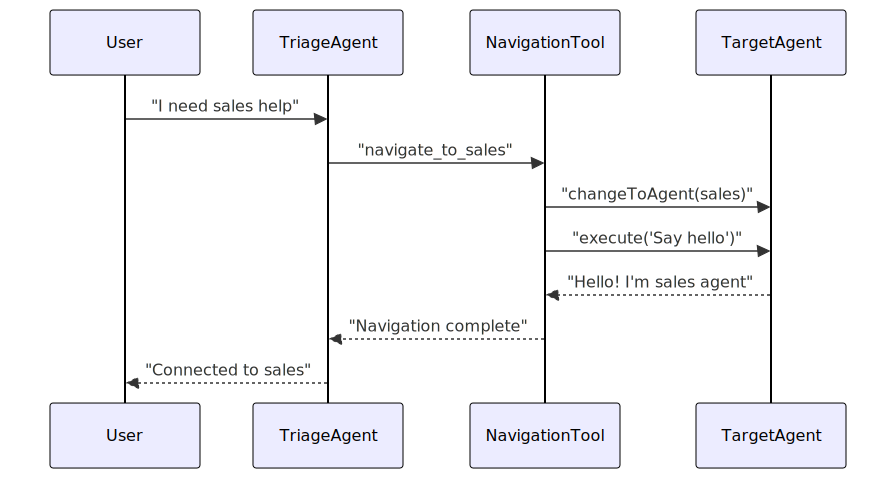
Navigation tools provide seamless handoffs between specialized agents while maintaining conversation context.
The framework provides robust error handling through rescue strategies and validation patterns.
When tools fail or produce empty responses, the rescue system provides fallback behavior:
Rescue strategies are configured through global settings:
| Strategy | Configuration | Behavior |
|---|---|---|
| Flush | CC_RESQUE_STRATEGY: "flush" |
Return placeholder |
| Retry | CC_RESQUE_STRATEGY: "retry" |
Attempt new completion |
| Placeholder | CC_EMPTY_OUTPUT_PLACEHOLDERS |
Custom error messages |
The framework prevents deadlocks during agent navigation and tool execution:
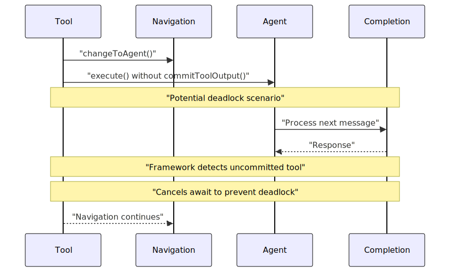
The framework automatically detects and resolves potential deadlock conditions when tools perform navigation without properly committing their output.
The framework supports event-driven architecture for real-time communication between agents and external systems.
Events can be broadcast to specific clients without affecting message history:
Events provide a mechanism for real-time notifications:
| Function | Purpose | History Impact |
|---|---|---|
event() |
Send event to client | Not stored in history |
listenEvent() |
Register event handler | Client-side processing |
execute() |
Send message to agent | Stored in history |
Proper resource management ensures system stability and prevents memory leaks in long-running applications.
All connection types support proper cleanup through disposal:
Resource disposal ensures clean shutdown:
| Resource Type | Cleanup Action | Impact |
|---|---|---|
| Agent Instances | Remove from session | Stop processing |
| Message History | Clear history list | Free memory |
| Client State | Release state data | Prevent leaks |
| Event Listeners | Unregister handlers | Stop notifications |